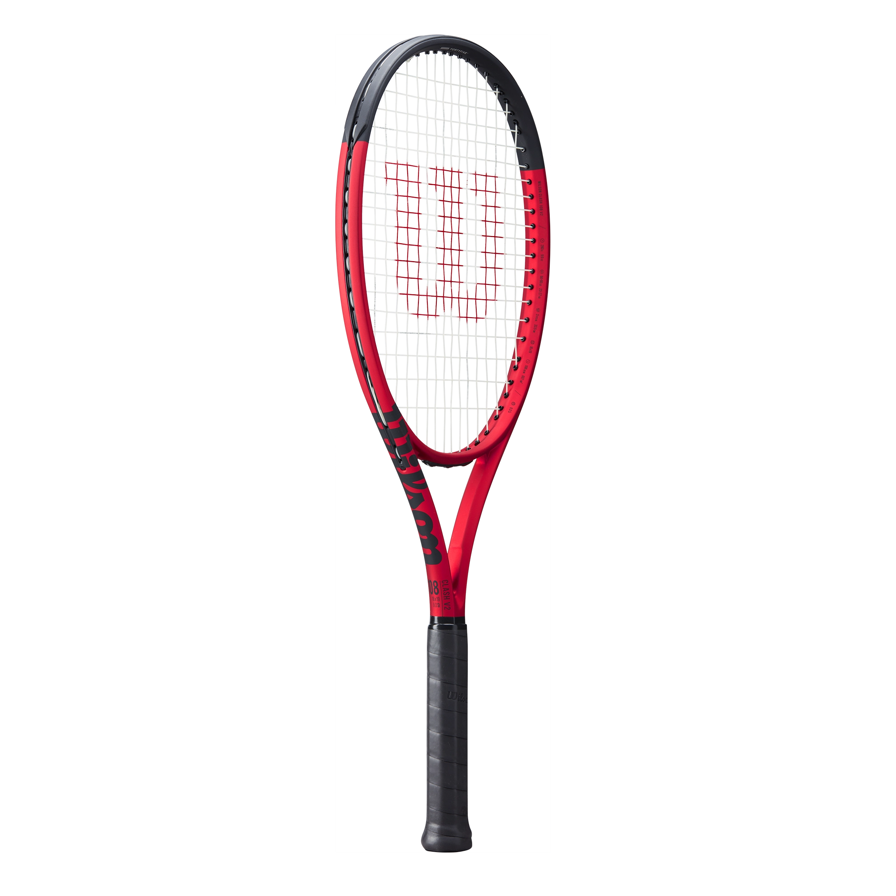
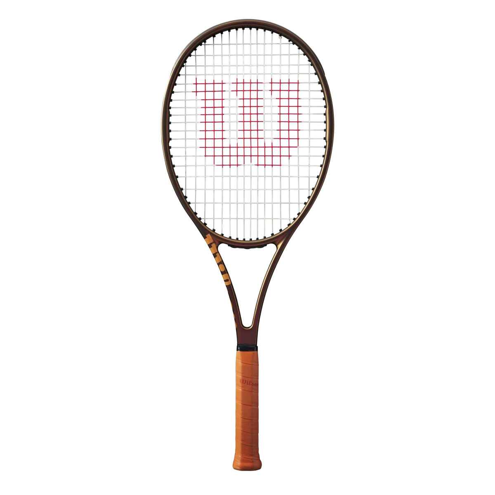

Director of Advanced Innovation · Wilson Sporting Goods · 35+ Year Career
Bill Severa is Wilson's longest serving engineer with over 35 years pushing the boundaries of racquet technology. He rose from senior designer to Director of Advanced Innovation, leading Wilson LABS, the company's elite R&D division.
For two decades the tennis industry treated frame rigidity as gospel. Severa challenged this by embedding carbon fibres at unconventional angles to create a frame that flexes predictably. The result was the Wilson Clash and an industry wide rethink of racquet design.
Breakthrough ImpactThe Clash became the best selling tennis racquet worldwide within its first year of launch in 2019.
Severa spent over 200 hours with sports psychologists studying casual players. A first for Wilson's design process.
Industry rigidity standards had gone unchallenged for over two decades before the Clash redefined them.
Each represents a novel engineering problem Severa solved that no one else had tackled.


Co designed with elite athletes including Federer over two years to ensure real match performance.
Selected and tested Kevlar, graphite and carbon fibre to balance durability, weight and performance.
200+ hours with sports psychologists studying casual players, prioritising confidence over specs.
Wilson lost market share in the early 2000s. Severa balanced innovation with viability, producing the world's number one selling racquet.
13 patents protect Wilson's competitive edge within industry regulations on racquet dimensions and materials.
Every design weighs Wilson's 110 year legacy, seen in the Pro Staff v14's nod to 1983 aesthetics with next generation materials.
Severa championed the shift from wood and steel to graphite and Kevlar composites in the 1980s and 90s. Racquets became lighter, stronger and more responsive, transforming tennis into a sport accessible to millions.
Societal Impact: Lower weight frames reduced injury rates and opened the sport to older players, children and those with physical limitations.
Reduced InjuriesMass AccessibilitySport GrowthWilson's nCode series (2004) embedded nano sized silicone oxide crystals into the carbon fibre frame, increasing density at the molecular level. Superior strength and resilience previously impossible to manufacture.
Environmental Impact: Nano enhanced frames last significantly longer, reducing replacements and lowering manufacturing waste.
Frame LongevityLess WastePerformance Ceiling Raised